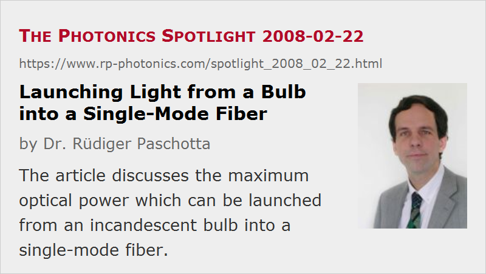

Launching Light from a Bulb into a Single-Mode Fiber
Posted on 2008-02-22 as a part of the Photonics Spotlight (available as e-mail newsletter!)
Permanent link: https://www.rp-photonics.com/spotlight_2008_02_22.html
Author: Dr. Rüdiger Paschotta, RP Photonics Consulting GmbH
Abstract: The article discusses the maximum optical power which can be launched from an incandescent bulb into a single-mode fiber.

Ref.: encyclopedia article on single-mode fibers, brightness
It is well known that it is hard to efficiently launch light into a single-mode fiber, when trying with a beam of poor spatial coherence and accordingly low brightness. An extreme case is so start with an ordinary incandescent lamp (light bulb), focusing some of its thermal radiation output on a fiber end. This is sometimes done, e.g. in the context of white light interferometry. Some nanowatts of optical power in the fiber are sufficient, but somewhat more power would always be nice to have, i.e. in order to achieve a better signal-to-noise ratio.
It wouldn't be a good idea just to use a more powerful bulb. With bulbs, more power usually doesn't mean more brightness: you just get more optical power spread over more radiation modes, and the fiber doesn't pick up more. What helps is only to increase the filament temperature. This means that you do significantly better with a halogen lamp (≈3000 K), compared with a standard light bulb (≈2500 K). Besides the higher temperature, it also helps that the filament of a halogen bulb is thicker, making it easier to get the best of the intensity imaged onto the fiber core.
How about better focusing optics? Ideally, one should image the filament of the bulb to the fiber core so that the whole core region is within the image of the hottest part of the filament. Assuming ideal absorption of the filament and disregarding a few percent of losses e.g. from reflections at the bulb's glass, the lens and the fiber end, ideally one can launch into the fiber the power corresponding to two radiation modes (considering two polarization directions):
where ν is the optical frequency, T is the filament's temperature, and Δν is the optical bandwidth. This is reminiscent of Planck's formula for black body radiation. In fact it is a part of it: the factor with the mode density is missing, because we are dealing with just two modes.
Unfortunately, for visible light we are in the regime where the photon energy hν is well above the thermal energy k\BT. Here, the exponential in the denominator gets quite large, and the filament temperature matters a lot.
For a numerical example, assume a halogen bulb with 3000 K and a wavelength interval of 50 nm width around 600 nm. We obtain ≈9 nW. That is not very much, just reflecting the very low brightness of an incandescent lamp. However, it is sufficient for some applications.
The brightness can be increased by many orders of magnitude by using a superluminescent source, e.g. in the form of a superluminescent diode. This allows one to launch tens of milliwatts of power, if not more.
This article is a posting of the Photonics Spotlight, authored by Dr. Rüdiger Paschotta. You may link to this page and cite it, because its location is permanent. See also the RP Photonics Encyclopedia.
Note that you can also receive the articles in the form of a newsletter or with an RSS feed.
Questions and Comments from Users
Here you can submit questions and comments. As far as they get accepted by the author, they will appear above this paragraph together with the author’s answer. The author will decide on acceptance based on certain criteria. Essentially, the issue must be of sufficiently broad interest.
Please do not enter personal data here; we would otherwise delete it soon. (See also our privacy declaration.) If you wish to receive personal feedback or consultancy from the author, please contact him e.g. via e-mail.
By submitting the information, you give your consent to the potential publication of your inputs on our website according to our rules. (If you later retract your consent, we will delete those inputs.) As your inputs are first reviewed by the author, they may be published with some delay.
|  |
If you like this page, please share the link with your friends and colleagues, e.g. via social media:
These sharing buttons are implemented in a privacy-friendly way!